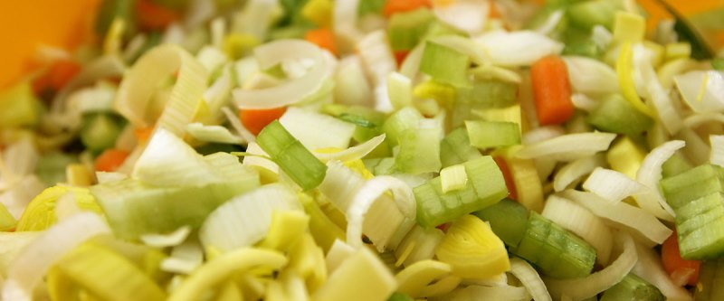

Картофельный суп с луком-порей

Заранее сварить 2 л. бульона. Почистить и крупно нарезать 2 морковки и 1 луковицу. Нарезать 2 стебля сельдерея. Нарезать 400 гр. лука-порея. Очистить и нарезать 2 зубчика чеснока.
Поставить большую кастрюлю на сильный огонь и добавить 2 ст.л. оливкового масла. Положить все нарезанные овощи и перемешать деревянной ложкой. Варить около 10 минут под не полностью закрытой крышкой, пока морковь не смягчится, а лук и лук-порей слегка станут золотистыми. Залить бульоном.
400 гр. картофеля очистить и порезать на кубики 1 см., добавить в суп. Хорошо перемешать суп и довести до кипения. Убавить огонь и варить еще 10 минут под крышкой. Снять кастрюлю с огня, приправить солью и перцем.